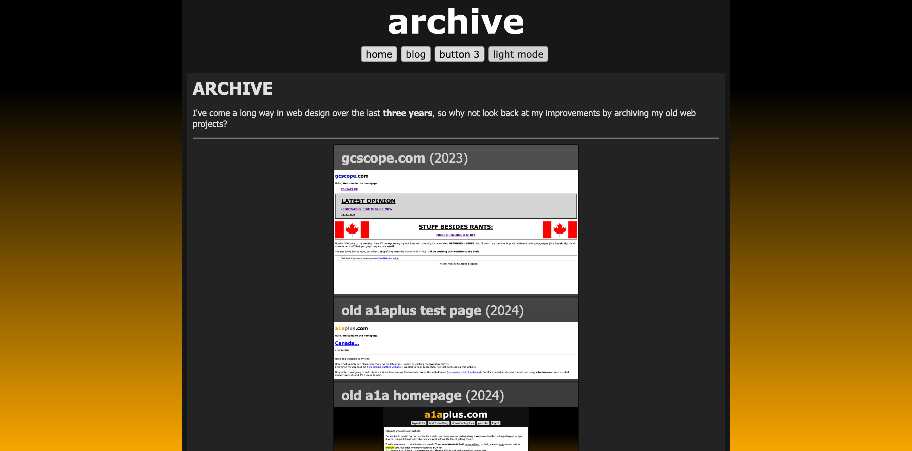

archive
07/13/26
I got the archive up and running today. I found a few of my old web projects and uploaded it to the site for you guys to see.

Right now, there's three projects you can visit. I worked on gcscope.com from November to December 2023. Originally I wanted to call it rantstuff.com, because it was available and sounded catchy (And I wanted to make a ranting site because I had no ideas), but my dad told me he wouldn't buy it. Three years later, I still think it sounds catchy and the domain is still available, so I'm probably gonna buy it.
(UPDATE) I bought the web domain.
The second project was me trying to recreate the first project (gcscope.com), but on a different web domain, a1aplus.com. I originally thought a1a.ca was the better domain, but I wanted a .com domain instead of a .ca domain. When I found out my dad also had a .com domain called a1aplus.com, i wanted to use that instead. It wasn't until recently that I wanted to use a1a.ca because it looks cleaner.
The last one was the original homepage I made so I could see what the site would look like with content on it. This was the one used the longest and has gone throught the most design changes. I'll try to find those design changes to put on here as well.
I hope 2 blogs in 2 days and an archive page will make up for not posting in 2 weeks. I'm also not gonna write poems at the end of my blogs. I changed my mind.
PSALM 46:1